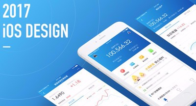
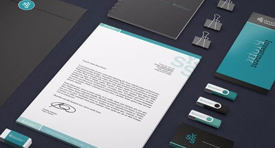

<div id="side-shadow"></div>
<div id="side-nav">
    <div>

        <div class="side-bar-box">
            <div class="side-nav-bar">
                <div class="head">
                    <form action="">
                        <input type="text" placeholder="Search title..." value="">
                        <i class="fa fa-search"></i>
                    </form>
                </div>
                <ul class="list">
                    <li><a href="index.html"><i class="fa fa-home"></i>网站首页</a></li>
                    <li><a href="about.html"><i class="fa fa-pie-chart"></i>关于我们</a></li>
                    <li><a href="service.html"><i class="fa fa-coffee"></i>服务项目</a></li>
                    <li><a href="product_list.html"><i class="fa fa-camera"></i>产品中心</a>
                        <div class="nav-sec">
                            <a href="product_list.html?tid=0">
                                
                                <p>
                                    APP技术原本是对软件进行加速运算或进行大型科学运算的技术，
                                    基于Paas开发平台开发出的app,直接部署在云环境上，形成一种租用云服务的模式。
                                </p>
                            </a>
                                <ul>
                                    <li><a href="product_list.html?tid=1" title="APP开发">APP开发</a></li>
                                    <li><a href="product_list.html?tid=2" title="网站建设">网站建设</a></li>
                                    <li><a href="product_list.html?tid=3" title="平面设计">平面设计</a></li>
                                </ul>

                        </div>
                    </li>
                    <li><a href="news_list.html"><i class="fa fa-bell"></i>新闻资讯</a>
                        <div class="nav-sec">
                            <a href="news.news_list?tid=0">
                                
                                <p>
                                    APP技术原本是对软件进行加速运算或进行大型科学运算的技术，
                                    基于Paas开发平台开发出的app,直接部署在云环境上，形成一种租用云服务的模式。
                                </p>
                            </a>
                            <ul>
                                <li><a href="news_list.html?tid=1" title="APP开发">公司新闻</a></li>
                                <li><a href="news_list.html?tid=2" title="网站建设">新闻资讯</a></li>
                                <li><a href="news_list.html?tid=3" title="平面设计">行业资讯</a></li>
                            </ul>

                        </div>
                    </li>
                    <li><a href="case_list.html"><i class="fa fa-flag"></i>案例展示</a></li>
                    <li><a href="message.html"><i class="fa fa-book"></i>联系我们</a></li>
                </ul>
                <div class="side-nav-foot">
                    <div class="cotact">
                        <span>Call me:</span>
                        <span>4000-000-000</span>
                        <i class="fa fa-qrcode"></i>
                    </div>
                    <div class="share">
                        <a href="#"><i class="fa fa-share-alt"></i></a>
                        <a href="#"><i class="fa fa-qq"></i></a>
                        <a href="#"><i class="fa fa-weibo"></i></a>
                    </div>
                    <p class=""copyright>Copyright © 2018科技公司</p>
                </div>
            </div>

        </div>
        <div class="side-nav-open">
            <div>
                <hr/>
                <hr/>
                <hr/>
                <hr/>
            </div>
        </div>
    </div>
</div>
